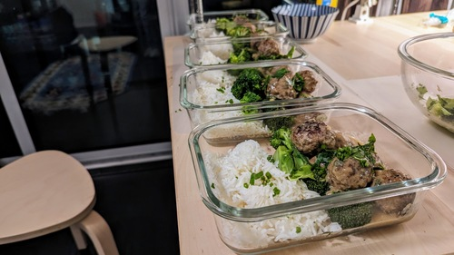

Swedish Meatballs (Ikea)

Serves: 5
Prep time: 1hr
Author: Matthieu Court
Ingredients
800g - 50/50 Pork/Beef Mince
1/2 cup - Pank Crumbs
1 - Egg
1 - Onion (grated)
Spices - Nutmeg, AllSpice, Black Pepper
1/2 cup - Heavy Cream or Condensed Milk
Flour and Butter for Roux
2 cups - Beef Stock
Herbs - Green Onion, Parsley, Chives
Salt, Pepper (to taste)
Back to Home